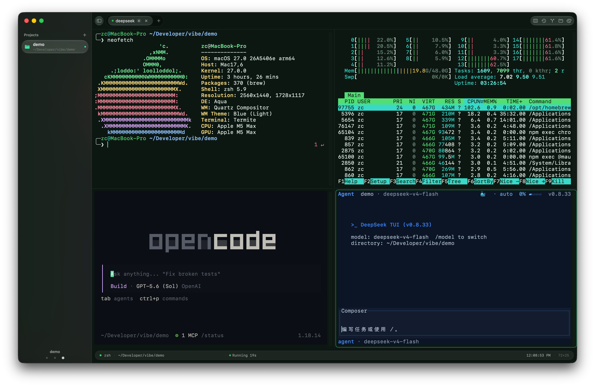
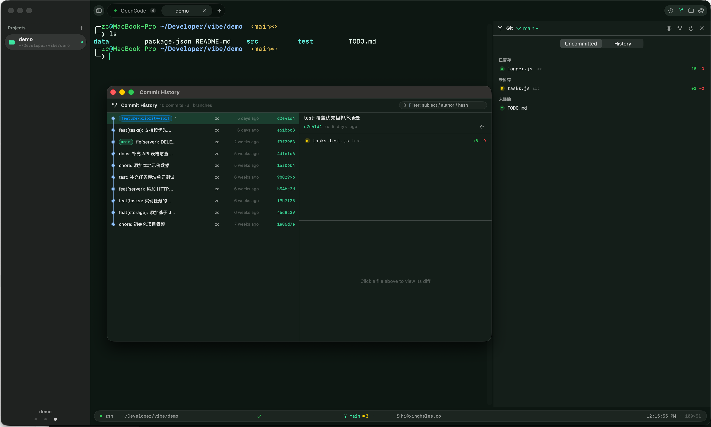
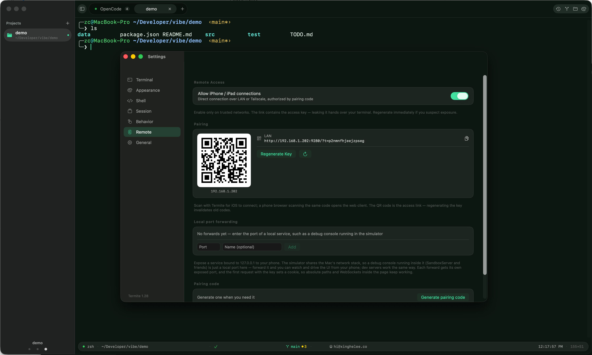
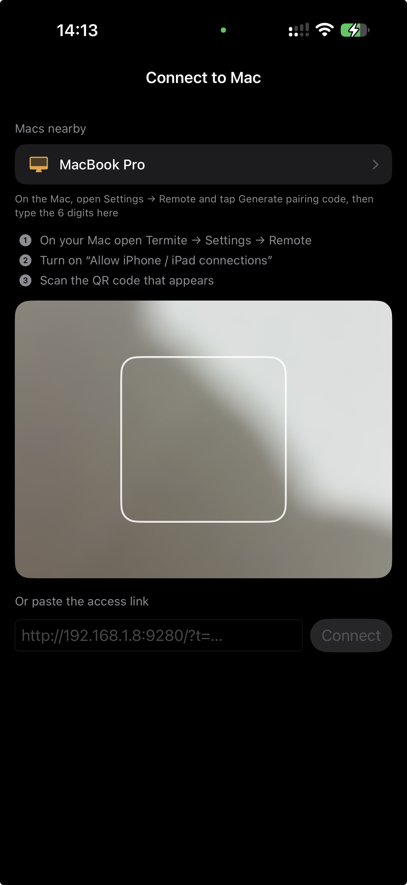

Focus follows inspection
Swipe to a pane and keyboard focus lands there automatically. Use ⌘← / ⌘→ for precise navigation.
TERMITE 2.0.0 · OPEN SOURCE
A native terminal for macOS—and the control plane for parallel AI development.
Keep terminals, nested panes, Git workflows, remote sessions, and multiple coding agents visible and under control in one native workspace.

01 / CAROUSEL MODE
Carousel mode lays every pane in the current tab out as equal-width columns. Browse with the trackpad or keyboard; focus follows the task you inspect.
Swipe to a pane and keyboard focus lands there automatically. Use ⌘← / ⌘→ for precise navigation.
A breathing pane border, menu-bar badge, and notification surface agents waiting for you; ⌘J jumps to the oldest one.
Create or open a dedicated git worktree from a pane menu so parallel agents never share the same working tree.
Windows, tabs, pane layout, focus, working directories, and scrollback return after relaunch.
02 / GIT WORKFLOW
Inspect the repository without leaving the terminal workspace. The panel and detached history window cover daily Git work from changes to commit archaeology.

A native Git surface built around the context already open in your terminal.
03 / PRIVATE-NETWORK REMOTE
Pair an iPhone, iPad, or browser over a trusted LAN or Tailscale network. Browse sessions, take input control, and preview or operate an iOS Simulator running on the Mac in real time.

The mobile client keeps terminal control keys, a full software keyboard, session handoff, and Simulator interaction close at hand. Local port forwarding can also expose a development service bound to 127.0.0.1 to an already paired device.
Use terminal control keys and the full software keyboard, then preview and operate the Mac's iOS Simulator in real time.
Discover a nearby Mac or paste its private-network access link. Pairing works across a trusted LAN or Tailscale.

04 / SHELL INTELLIGENCE
Termite automatically integrates with zsh, bash, and fish. OSC 133 markers turn command boundaries, output, exit status, and duration into navigable workspace data.
Jump between commands, copy the previous command's complete output, and compare two outputs with an inline diff.
SQLite-backed history supports cross-session fuzzy search, command timelines, and daily reports.
Twenty full-window themes, a global drop-down terminal, Dock folder opening, and the termite command-line tool.
Inline images, structured JSON / CSV output, asciinema recording and playback, copy-on-select, and risky-paste protection.
05 / DEVELOPMENT ENVIRONMENT
This is the maintainer's primary development workstation, not the minimum system requirement.
TERMITE 2.0.0
Download the signed and Apple-notarized DMG, or install with Homebrew. Termite is free and open source under GPL-3.0.